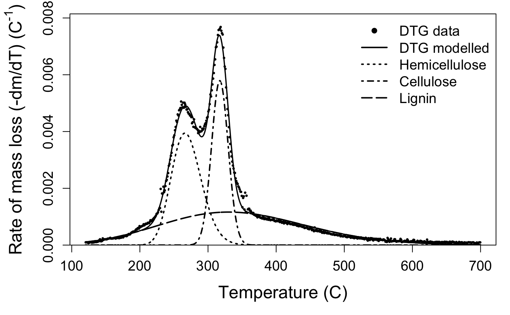

Carbon component estimation with TGA and mixture modelling
Source:vignettes/Background.Rmd
Background.RmdBackground
Plant cell wall biomass is composed of a range of different types of carbon. Ecologists can use these proportions of biomass carbon to make generalisations about species’ effects on ecosystem processes such as litter decomposition, which links plant biomass to the global carbon cycle (Cornwell et al. 2008). Biofuels researchers use proportions of biomass carbon types to estimate kinetic decay parameters of species’ tissue. Traditional methods for calculation of lignocellulosic biomass involve wet chemistry assays for carbon component analysis, which are time-consuming and adversely impact the environment through use of sulfuric acid and acetic anhydride, among other chemicals. Thermogravimetric analysis (TGA) is an alternative method, already in use among biofuels researchers, to approximate these carbon compounds from mass loss data obtained by heating a biomass sample (in a \(N_2\) environment, termed pyrolysis).
Mass loss during pyrolysis can be regarded as the sum of the degradation of the main components of the sample — hemicelluloses, cellulose, and lignin (Hu et al. 2016; Cheng et al. 2015; Perejón et al. 2011; Órfão and Figueiredo 2001; Müller-Hagedorn and Bockhorn 2007). Therefore, the multi-peaked rate of mass loss curve can be mathematically separated into constituent parts with a mixture model — termed deconvolution. By integrating under these individual peaks, we can estimate the contribution of each component to the overall initial sample. This method has been validated by studies comparing estimates to experimental measurements (Yang et al. 2006). Plant trait measurement is guided by the principle of standardised, widely reproducible methods (Pérez-Harguindeguy et al. 2013), but much of the published literature use commercial software to deconvolve the rate of mass loss curve, for example OriginPro (Chen et al. 2017), PeakFit (Perejón et al. 2011), Fityk (Perejón et al. 2011), or Datafit (Cheng et al. 2015). Software accessibility and reproducibility may be one reason why thermogravimetric analysis for carbon type estimation has not yet been widely adopted by functional ecologists, despite being previously used to identify plant species’ recalcitrance, for example in marine and coastal macrophytes (Trevathan-Tackett et al. 2015), and eucaplyts (Órfão and Figueiredo 2001). In addition, proprietary software inhibits researchers already conducting this type of analysis from making their analyses independently reproducible.
The mixchar package provides an open-source set of functions to perform this deconvolution. Although the nonlinear mixture model used for peak separation at the core of this package could be used for many different purposes, mixchar provides specific guidelines related to thermal decay curve analysis and carbon component estimation.
Litter collection and preparation
Collect litter
We developed and tested the functions in this package using the thermogravimetric decay data for litter of 29 different plant species. Two species from this set are available as datasets in the package — the freshwater reed Juncus amabilis (accessed as juncus) and the freshwater fern Marsilea drumondii (accessed as marsilea).
Dry litter
To ensure component estimates are an accurate representation of the original composition of the litter, it is important to dry samples as quickly as possible to prevent decomposition. Plant litter collected for this analysis was placed in moist plastic bags and stored in dark coolers until transported to the lab, and then moved to a dark, refrigerated room. We dried the fresh litter at 60 °C for 72 hours.
Grind litter
Dry litter must be ground in order to be used in thermogravimetric analysis. We ground litter to < \(40 \mu m\) using a Retsch Centrifugal Mill ZM200.
Thermogravimetric analysis
Pyrolyse samples
We pyrolysed 10–20 mg subsamples of dry, ground litter in an N\(_2\) environment from 30–800 °C at a temperature ramp of 10 °C/min using a Netzsch TGA-FTIR thermogravimetric analyser (Department of Biomedical Engineering, University of Melbourne). The resulting data is mass against temperature (Fig. 1).

Figure 1. Mass across temperature for Juncus amabilis.
Deconvolution
1. Load data
The first step is to load the data derived from the thermogravimetric analysis into R. This step will vary depending on the format of your exported data. Two of many options for reading data are read.csv() for .csv files and read.table() for .txt files. Both of these functions also have a skip argument, in which you can tell R to begin reading data from a certain line, useful if the exported data has several lines of metadata at the top. You may also then have to assign column names. For example:
my_data <- read.csv('your_file_path_here.csv', header = FALSE, skip = 15)
colnames(c('temperature_C', 'mass_mg'))More information about reading data into R can be found here.
This package was developed using data from a Netzsch TGA-FTIR thermogravimetric analyser. We have included two example datasets in this package, called juncus and marsilea, that we will use for this demonstration. The juncus dataset contains theromogravimetric data for a sample of the freshwater reed, Juncus amabilis, and marsilea contains data for the freshwater fern, Marsilea drumondii.
## temp_C mass_loss
## 1 31.453 -0.000931
## 2 31.452 -0.001340
## 3 31.450 -0.001350
## 4 31.450 -0.001660
## 5 31.450 -0.001680
## 6 31.450 -0.0018002. Calculate rate of mass loss
After we’ve loaded our data, we need to calculate the rate of mass loss across temperature by taking the derivative. We use the process function to take the derivative, resulting in rate of mass loss over temperature data. The process function needs the dataset, the initial mass of sample, the name of the temperature data column, and the name of your mass column (mg). Mass might be recorded in your exported dataset in different ways:
- If you have mass loss of sample, such as in the
juncusdataset, you can specify the column name using themass_lossargument. - If you have mass remaining of sample, you specify the column name using the
massargument. -
You only need to specify one of these columns for the
processfunction. But make sure the argument matches the kind of data!
The function defaults to temperature data in Celsius, but you can also modify to indicate the data is provided in Kelvin, by specifying the argument temp_units = 'K'.
deriv_juncus <- process(juncus, # dataframe name
init_mass = 18.96,
temp = 'temp_C', # column name for temperature
mass_loss = 'mass_loss') # column name for mass loss data
deriv_juncus## Derivative thermogravimetry data (DTG) calculated for
## 768 datapoints from 31.5 to 798.52 degrees C.If you plot() the output of the process function, you will get two curves: the mass of sample across time and the rate of mass loss curve. If you’re only interested in one plot, you can specify plot_type = 'mass' or plot_type = 'rate'. You can also specify a size factor using cex. The rate of mass loss curve is a multi-peaked curve (Fig. 2) encompassing three main phases (Órfão and Figueiredo 2001):
- A short period with a pronounced peak of moisture evolution, up until approximately 120 °C.
- A wide mid-range of high mass loss, caused by devolatilisation of primary biomass carbon components, between approximately 120–650 °C.
- A final period of little mass loss when carbonaceous material associated with the inorganic fraction decomposes, after approximately 650 °C.

Figure 2. DTG curve for Juncus amabilis. Rate of mass loss value scaled by initial mass of sample. Line segments 1, 2, and 3 represent mass loss phases.
In the next step we will crop the data to include only phase 2, so visualising your own data is important to check that the default temperature bounds will be suitable, in case for example the dehydration phase extends past 120 \(^{\circ}\)C or ends earlier. Comparing the plots for the two species we can see similarities in the shape and location of the peaks of the overall rate of mass loss curve, but also subtle differences. It is these characteristics we will tease apart using the nonlinear mixture model in the next step.
3. deconvolve data
Crop mass loss data
The decovolve function takes care of modelling the rate of mass loss data with the nonlinear mixture model. Since the overall DTG curve thus represents the loss of extractives, water, inorganic matter, and volatiles in addition to our components of interest (Hu et al. 2016), we isolate mass loss from our primary biomass components by cropping the DTG data to Phase 2 (roughly 120–650 °C). The default temperature bounds are 120 \(^{\circ}\)C and 700 \(^{\circ}\)C, but can be modified with the lower_temp and upper_temp arguments.
Non-linear mixture model
Biomass components decompose relatively independently because they do not interact much during thermal volatilisation (Yang et al. 2006). Therefore, the cropped DTG curve can be mathematically deconvolved into constituent parts using a mixture model. The derivative rate of mass loss equation (\(\frac{dm}{dT}\)) can be expressed as the sum of \(n\) independent reactions, as follows (Órfão and Figueiredo 2001):
\[\begin{align} -\frac{dm}{dT} &= \sum\limits_{i=1}^n c_i\frac{d\alpha_{i}}{dT} \label{eqn:mixture_model} \\ m &= \frac{M_T}{M_0} \label{eqn:fraction} \\ c_i &= M_{0i} - M_{\infty i} \label{eqn:decayed_mass} \\ \alpha_i &= \frac{M_{0i} - M_{Ti}}{M_{0i} - M_{\infty i}} \label{eqn:alpha} \end{align}\]
where mass (\(m\)) is expressed as a fraction of mass at temperature \(T\) (\(M_T\)) of the initial sample mass (\(M_0\)), \(c_i\) is the mass of component \(i\) that is decayed, and the mass loss curve of each individual component (\(\frac{d\alpha_{i}}{dT}\)) is the derivative of \(\alpha_i\), the conversion of mass at a given temperature (\(M_{Ti}\)), from the initial (\(M_{0i}\)), given total mass lost between the initial and final (\(M_{\infty i}\)) temperature for each curve.
Although most of our results can be described with only \(n = 3\) peaks, corresponding to a single curve each of hemicelluose, cellulose, and lignin, some species yield a second hemicellulose peak at a lower temperature, resulting in \(n = 4\) independent curves. This is because the soluble carbohydrates in plant tissue can take many forms, including xylan, amylose, etc., which apparently degrade at different temperatures (see also Chen et al. 2017; Müller-Hagedorn and Bockhorn 2007). deconvolve will decide whether three or four peaks are best using an internal function that determines if there is a peak below 220 \(^{\circ}\)C. Upon inspection of your curve you can override this by modifying the n_peaks argument.
In order to fit the mixture model, we must determine the shape of the individual curves (\(\frac{d\alpha_{i}}{dT}\)) that are summed to produce it. Many different functions have been proposed: the asymmetric bi-Gaussian (Sun et al. 2015), logistic (Barbadillo et al. 2007), Weibull (Cai and Liu 2007), asymmetric double sigmoidal (Chen et al. 2017), and the Fraser-Suzuki function (Perejón et al. 2011; Hu et al. 2016). Comparisons of several techniques (Svoboda and Málek 2013; Perejón et al. 2011; Cheng et al. 2015) found that the Fraser-Suzuki function best fit these kinetic curves, since it allows for asymmetry. We therefore use the Fraser-Suzuki function to describe the rate expression of a single curve as follows:
\[\begin{gather}\label{eqn:fs_function} \frac{d\alpha_i}{dT} = h_i\ exp\bigg\{-\frac{ln2}{s_i^2}\Big[ln\Big(1 + 2s_i \frac{T - p_i}{w_i}\Big)\Big]^2\bigg\} \end{gather}\]
where T is temperature (°C), and the parameters \(h_i\), \(s_i\), \(p_i\), and \(w_i\) are height, skew, position, and width of curve \(i\), respectively. In total, our model estimates 12 or 16 parameters, one for each parameter for either 3 or 4 primary components. You can play around with changing individual parameters for each curve, and check out the effect on the overall decay curve, using the shiny app.
deconvolve() uses non-linear optimisation with residual sum of squares to fit the rate expression (as in Cheng et al. 2015). Starting values were selected based on curves depicted in the literature (Müller-Hagedorn and Bockhorn 2007) and from the results of running an identical deconvolution on pure cellulose and lignin samples. Hemicelluloses decay in a reasonably narrow band beginning at a lower temperature (Müller-Hagedorn and Bockhorn 2007), so we used 270 for position and 50 for width. Linear cellulose crystals decay at a higher temperature, but decay more rapidly after peak temperatures are reached, so starting position was set to 310 and width to 30. Lignin typically decays beginning at a high temperature and over a wide interval (Müller-Hagedorn and Bockhorn 2007), so position and width began at 410 and 200, respectively. These starting values can also be modified in the deconvolve() function with the start_vec, lower_vec, and upper_vec arguments. These initial starting values are optimised before model fitting using the NLOPTR_LN_BOBYQA algorithm (Powell 2009) within the nloptr (Johnson, n.d.) package. Finally, optimised starting values are fit to the non-linear mixture model using nlsLM() in the minpack.lm (Elzhov et al. 2016) package.
The function also has built in starting values for the nonlinear optimisation. These values were tested on litter from 30 plant species, encompassing herbaceous, graminoid, as well as woody species. However, if they do not work for your sample, or you would like to play with the effect of changing them, you can do so with the start_vec, lower_vec, and upper_vec arguments.
## Deconvolution by -part Fraser-Suzuki mixture model fitted to
## 580 datapoints from 120 to 700 degrees C.# here's an example of specifying your starting vector.
# the order of values is height, skew, position, then width
my_starting_vec <- c(height_0 = 0.002, skew_0 = -0.15, position_0 = 210, width_0 = 50,
height_1 = 0.003, skew_1 = -0.15, position_1 = 250, width_1 = 50,
height_2 = 0.006, skew_2 = -0.15, position_2 = 320, width_2 = 30,
height_3 = 0.001, skew_3 = -0.15, position_3 = 390, width_3 = 200)
output_marsilea <- deconvolve(deriv_marsilea, n_peaks = 4, start_vec = my_starting_vec)
output_marsilea## Deconvolution by -part Fraser-Suzuki mixture model fitted to
## 580 datapoints from 120 to 700 degrees C.Component weights
Once overall curve parameters are fit, we can pass each components’s parameter estimates to a single Fraser-Suzuki function, and calculate the weight of the component in the overall sample by integrating the area under the peak. To estimate the uncertainty of the weight predictions, deconvolve() will calculate the 95% interval of the weight estimates across a random sample of parameter estimates, drawn in proportion to their likelihood. We assume a truncated multivariate normal distribution, since the parameters are constrained to positive values, using the modelling package tmvtnorm (Wilhelm and G 2015).
\[\begin{gather}\label{eqn:integration} \alpha_i = \int_{120}^{650} h_i\ exp\bigg\{-\frac{ln2}{s_i^2}\Big[ln\Big(1 + 2s_i \frac{T - p_i}{w_i}\Big)\Big]^2\bigg\} dT \end{gather}\]
We interpret that the peak located around 250–270 °C corresponds to primary hemicelluloses, around 310–330 °C to cellulose, and around 330–350 °C to lignin. If present, the fourth peak located below 200 °C corresponds to the most simple hemicelluloses. The second dataset included in the package, marsilea, is an example of a four-peak deconvolution.
5. Examine outputs
deconvolve results in a few different outputs that you can retrieve with accessor functions.
-
rate_data()will show you the processed dataset that results from theprocessfunction, useful if you want to play around with other modelling approaches or plotting options:
## temp_C deriv mass_T
## 5325 120.514 9.570652e-05 17.91630
## 5384 121.501 9.885901e-05 17.91445
## 5445 122.515 1.003878e-04 17.91252
## 5505 123.514 9.133606e-05 17.91079
## 5565 124.513 6.493836e-05 17.90956
## 5625 125.509 8.578618e-05 17.90794*temp_bounds() will print the temperature values at which the data were cropped for analysis:
## [1] 120 700-
model_fit()will show you the output of the mixture model and estimated parameter values for height, skew, position, and width for each peak. Peak 1 is hemicellulose, peak 2 is cellulose, and peak 3 is lignin. If present, the optional fourth peak located at the lowest temperature interval will be listed as peak 0:
## Nonlinear regression model
## model: deriv ~ fs_mixture(temp_C, height_1, skew_1, position_1, width_1, height_2, skew_2, position_2, width_2, height_3, skew_3, position_3, width_3)
## data: dataframe
## height_1 skew_1 position_1 width_1 height_2 skew_2
## 3.944e-03 1.258e-01 2.662e+02 5.106e+01 5.793e-03 1.344e-02
## position_2 width_2 height_3 skew_3 position_3 width_3
## 3.173e+02 2.866e+01 1.163e-03 1.085e-01 3.300e+02 2.500e+02
## residual sum-of-squares: 9.299e-06
##
## Number of iterations to convergence: 23
## Achieved convergence tolerance: 1.49e-08## Nonlinear regression model
## model: deriv ~ fs_mixture(temp_C, height_1, skew_1, position_1, width_1, height_2, skew_2, position_2, width_2, height_3, skew_3, position_3, width_3, height_0, skew_0, position_0, width_0)
## data: dataframe
## height_0 skew_0 position_0 width_0 height_1 skew_1
## 0.000816 -0.232926 187.779162 53.030500 0.002695 -0.330000
## position_1 width_1 height_2 skew_2 position_2 width_2
## 278.179206 54.575596 0.003670 -0.055013 317.234476 29.662293
## height_3 skew_3 position_3 width_3
## 0.001160 0.200000 330.000000 250.000000
## residual sum-of-squares: 6.336e-06
##
## Number of iterations to convergence: 25
## Achieved convergence tolerance: 1.49e-08-
component_weights()will display the mean, upper, and lower confidence intervals for each estimated component:
## HC CL LG value_type
## 1 21.560043 17.6748678 30.6629878 mean
## 2 20.432730 16.6433644 29.5201885 2.5%
## 3 21.598042 17.6367413 30.6535146 50%
## 4 22.757509 18.6700531 31.8302165 97.5%
## 5 0.597823 0.5128314 0.5914669 5## HC_1 HC_2 CL LG value_type
## 1 4.625424 16.281260 11.601421 31.009216 mean
## 2 2.664669 9.124988 3.885893 24.840613 2.5%
## 3 4.555857 16.317489 11.763706 31.052828 50%
## 4 6.922566 27.118057 22.561010 36.140566 97.5%
## 5 1.114594 4.434649 4.829690 3.013464 56. Plot deconvolved curves
The default plotting function for the output of the deconvolve function shows you your raw mass data, the estimated full curve from the mixture model, and also plots the individual component peaks using their parameter estimates from the model. The default plot is in black and white, but you can plot a colour version that uses colour-blind friendly viridis colours by specifying bw = FALSE.
Take a look at your plot. Do the estimates seem reasonable?


If the estimated peaks do not match your data well, it may be that your sample is a bit different than those used to develop the package. That’s not a problem, but you may need to try the deconvolution again with different starting values. If you aren’t managing to produce reasonable estimates, get in touch with us via the issues page.
If you want to modify the aesthetics of this plot for your own work, then you can access the parameter estimates as follows:
and use fs_function() to plot individual component peaks, and fs_mixture function to plot the overall mixture curve.
References
Barbadillo, F., A. Fuentes, S. Naya, R. Cao, J. Mier, and R. Artiaga. 2007. “Evaluating the Logistic Mixture Model on Real and Simulated TG Curves.” Journal of Thermal Analysis and Calorimetry 87 (1): 223–27.
Cai, J., and R. Liu. 2007. “Parametric Study of the Nonisothermal N Th-Order Distributed Activation Energy Model Involved the Weibull Distribution for Biomass Pyrolysis.” Journal of Thermal Analysis and Calorimetry 89 (3): 971–75.
Chen, Chuihan, Wei Miao, Cheng Zhou, and Hongjuan Wu. 2017. “Thermogravimetric Pyrolysis Kinetics of Bamboo Waste via Asymmetric Double Sigmoidal (Asym2sig) Function Deconvolution.” Bioresource Technology 225 (February): 48–57. https://doi.org/10.1016/j.biortech.2016.11.013.
Cheng, Zhicai, Weixuan Wu, Peng Ji, Xiaotong Zhou, Ronghou Liu, and Junmeng Cai. 2015. “Applicability of Fraser Function in Kinetic Analysis of DAEM Processes and Lignocellulosic Biomass Pyrolysis Processes.” Journal of Thermal Analysis and Calorimetry 119 (2): 1429–38. https://doi.org/10.1007/s10973-014-4215-3.
Cornwell, William K., Johannes H. C. Cornelissen, Kathryn Amatangelo, Ellen Dorrepaal, Valerie T. Eviner, Oscar Godoy, Sarah E. Hobbie, et al. 2008. “Plant Species Traits Are the Predominant Control on Litter Decomposition Rates Within Biomes Worldwide.” Ecology Letters 11 (10): 1065–71. https://doi.org/10.1111/j.1461-0248.2008.01219.x.
Elzhov, Timur V., Katharine M. Mullen, Andrej-Nikolai Spiess, and Ben Bolker. 2016. Minpack.lm: R Interface to the Levenberg-Marquardt Nonlinear Least-Squares Algorithm Found in Minpack, Plus Support for Bounds. https://CRAN.R-project.org/package=minpack.lm.
Hu, Mian, Zhihua Chen, Shengkai Wang, Dabin Guo, Caifeng Ma, Yan Zhou, Jian Chen, et al. 2016. “Thermogravimetric Kinetics of Lignocellulosic Biomass Slow Pyrolysis Using Distributed Activation Energy Model, Fraser Deconvolution, and Iso-Conversional Method.” Energy Conversion and Management 118 (June): 1–11. https://doi.org/10.1016/j.enconman.2016.03.058.
Johnson, Steven G. n.d. “The Nlopt Nonlinear-Optimization Package.” http://ab-initio.mit.edu/nlopt.
Müller-Hagedorn, M., and H. Bockhorn. 2007. “Pyrolytic Behaviour of Different Biomasses (Angiosperms) (Maize Plants, Straws, and Wood) in Low Temperature Pyrolysis.” Journal of Analytical and Applied Pyrolysis 79 (1-2): 136–46. https://doi.org/10.1016/j.jaap.2006.12.008.
Órfão, J. J. M, and J. L Figueiredo. 2001. “A Simplified Method for Determination of Lignocellulosic Materials Pyrolysis Kinetics from Isothermal Thermogravimetric Experiments.” Thermochimica Acta 380 (1): 67–78. https://doi.org/10.1016/S0040-6031(01)00634-7.
Perejón, Antonio, Pedro E. Sánchez-Jiménez, José M. Criado, and Luis A. Pérez-Maqueda. 2011. “Kinetic Analysis of Complex Solid-State Reactions. A New Deconvolution Procedure.” The Journal of Physical Chemistry B 115 (8): 1780–91. https://doi.org/10.1021/jp110895z.
Pérez-Harguindeguy, N., S. Díaz, E. Garnier, S. Lavorel, H. Poorter, P. Jaureguiberry, M. S. Bret-Harte, et al. 2013. “New Handbook for Standardised Measurement of Plant Functional Traits Worldwide.” Australian Journal of Botany 61 (3): 167. https://doi.org/10.1071/BT12225.
Powell, M.J.D. 2009. “The Bobyqa Algorithm for Bound Constrained Optimization Wihtout Derivatives.” Department of Applied Mathematics and Theoretical Physics, Cambridge England, Technical Report NA2009/06.
Sun, Youhong, Fengtian Bai, Xiaoshu Lü, Chunxia Jia, Qing Wang, Mingyi Guo, Qiang Li, and Wei Guo. 2015. “Kinetic Study of Huadian Oil Shale Combustion Using a Multi-Stage Parallel Reaction Model.” Energy 82 (March): 705–13. https://doi.org/10.1016/j.energy.2015.01.080.
Svoboda, Roman, and Jiří Málek. 2013. “Applicability of Fraser Function in Kinetic Analysis of Complex Crystallization Processes.” Journal of Thermal Analysis and Calorimetry 111 (2): 1045–56. https://doi.org/10.1007/s10973-012-2445-9.
Trevathan-Tackett, Stacey M., Jeffrey Kelleway, Peter I. Macreadie, John Beardall, Peter Ralph, and Alecia Bellgrove. 2015. “Comparison of Marine Macrophytes for Their Contributions to Blue Carbon Sequestration.” Ecology 96 (11): 3043–57.
Wilhelm, Stefan, and Manjunath B G. 2015. tmvtnorm: Truncated Multivariate Normal and Student T Distribution. http://CRAN.R-project.org/package=tmvtnorm.
Yang, Haiping, Rong Yan, Hanping Chen, Chuguang Zheng, Dong Ho Lee, and David Tee Liang. 2006. “In-Depth Investigation of Biomass Pyrolysis Based on Three Major Components: Hemicellulose, Cellulose and Lignin.” Energy & Fuels 20 (1): 388–93. https://doi.org/10.1021/ef0580117.